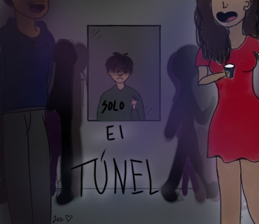
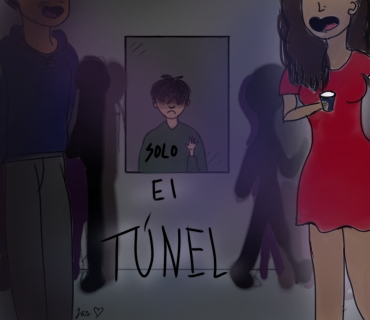

Projects
WEB DESIGN
This website counts, right?
ARTISTIC
The pandemic has made me want to create some art so here's some personal ones:


 



So, the fantastical ones are actually art I did for a Hackathon I participated with my friends. Art I did for a whole day because the hackathon lasted for a weekend.
"El Tunel" was for a spanish project for a book we read with the title.